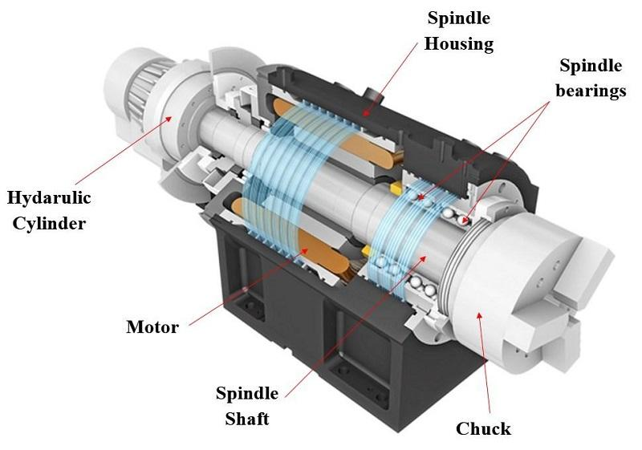
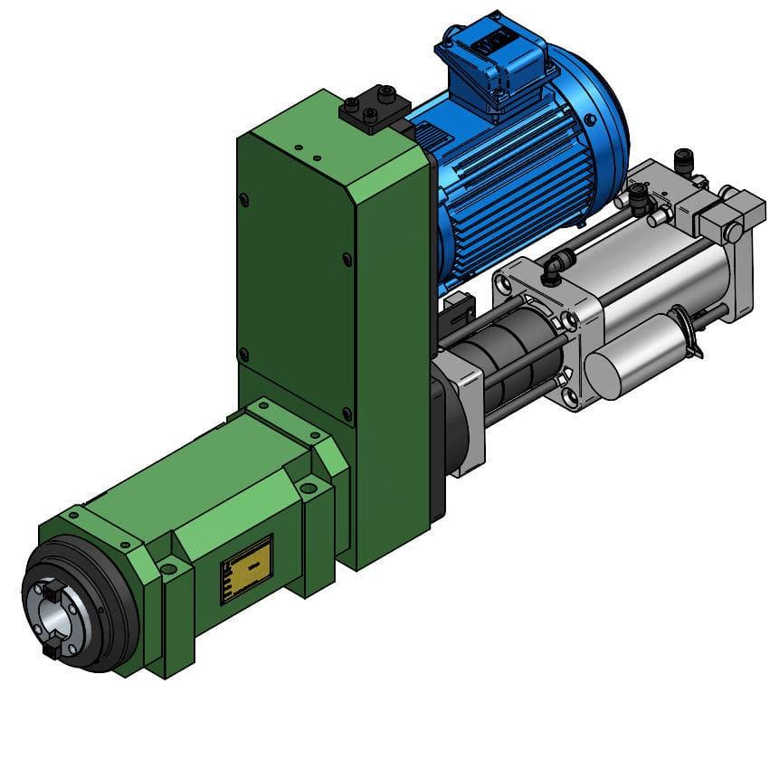
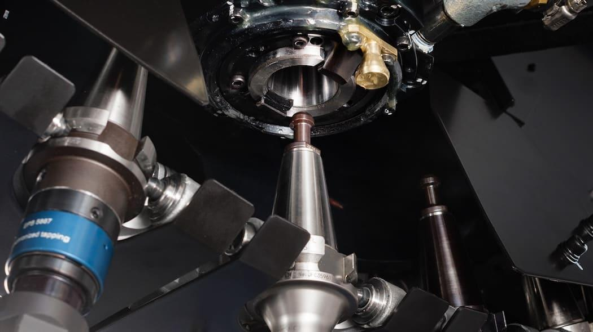
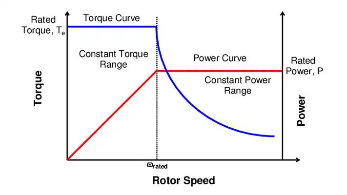
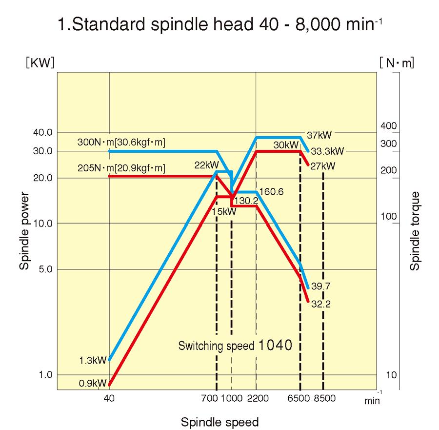
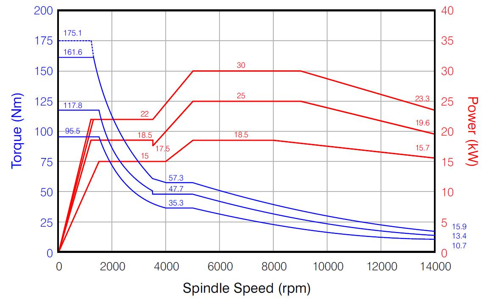

04_Spindle - Spindle
1. Definition and purpose of a CNC spindle
A CNC spindle is a precision rotating assembly that holds and rotates a cutting tool or workpiece at a controlled speed. It provides the rotational motion needed for machining operations such as milling, drilling, boring, tapping and turning.
The spindle system may include:
- Spindle motor.
- Spindle drive or inverter.
- Spindle shaft and bearings.
- Tool holder or workpiece chuck.
- Tool-clamping mechanism.
- Speed and position feedback.
- Cooling and lubrication systems.
- Spindle orientation and braking functions, where provided.
The spindle is different from a CNC servo axis. A servo axis primarily controls linear or rotary positioning along a programmed path. A spindle primarily provides rotational motion for cutting, although some machines also control spindle angle or use the spindle as a positioning axis.
2. CNC spindle system architecture



12
A simplified system looks like this:
CNC program
|
v
Spindle speed / direction / mode command
|
v
CNC controller or PLC
|
v
Spindle drive
|
v
Spindle motor
|
v
Transmission or direct drive
|
v
Spindle shaft and bearings
|
v
Tool holder / cutting tool
OR
Workpiece chuck / workpiece
Feedback:
Encoder / speed sensor / temperature sensors
|
+------> Drive or CNC controller
The exact arrangement depends on the machine. A machining centre generally rotates the cutting tool, while a conventional CNC lathe generally rotates the workpiece.
The spindle drive regulates motor operation according to the requested speed, direction, torque and other supported functions. The CNC controller coordinates spindle operation with axis movement and the machining program.
3. Spindle versus servo axis
| Feature | Spindle | CNC servo axis |
|---|---|---|
| Primary purpose | Cutting rotation | Controlled positioning or coordinated movement |
| Typical command | RPM, direction, spindle mode | Position, velocity and trajectory |
| Common motor | Spindle motor or suitable AC motor | Servo motor |
| Main feedback | Speed or angular position, depending on requirements | Position and often speed |
| Typical mechanism | Spindle shaft, bearings, tool holder or chuck | Ball screw, linear motor, rotary table or other axis mechanism |
| Typical operation | Continuous rotation during cutting | Coordinated movement along a path |
| Position control | Available on suitable systems | Core function in positioning applications |
This distinction is functional rather than absolute. A CNC spindle may use a spindle motor with encoder feedback and support precise angular positioning, while a servo motor may drive a rotary table.
Important: A spindle that can rotate at a commanded RPM is not automatically capable of accurate angular positioning. Orientation and positioning require the appropriate feedback, drive capability and controller functions.
4. Main types of CNC spindle arrangements
4.1 Belt-driven spindle
A motor drives the spindle through a belt and pulleys.
Advantages:
- Motor can be located away from the spindle shaft.
- Speed range can be adapted through pulley ratios.
- Design and servicing can be relatively straightforward.
Limitations:
- Belt wear, tension and alignment affect performance.
- Transmission compliance can influence response.
- High-speed capability depends on the design and components.
Typical concerns include belt deterioration, abnormal noise, vibration, incorrect tension and pulley damage.
4.2 Gear-driven spindle
A gearbox transmits motor power to the spindle and may provide different speed ranges.
Advantages:
- Can provide high torque at lower spindle speeds.
- Supports a broad range of speed and torque requirements.
- Suitable for heavy-duty cutting where designed for it.
Limitations:
- Additional mechanical components require lubrication and maintenance.
- Gear wear, backlash, noise and vibration can become issues.
- Shifting between gear ranges may require an interlocked sequence.
Some machines combine a gearbox with electronic speed control.
4.3 Direct-drive spindle
The motor is coupled directly to the spindle or integrated into the spindle assembly.
Advantages:
- Reduced transmission components.
- Potentially good dynamic response.
- No conventional belt or gearbox between motor and spindle.
Limitations:
- Thermal management is important.
- The design can be sensitive to bearing condition, balance and cooling.
- Service and replacement may require specialized procedures.
4.4 Motorized or built-in spindle
A motorized spindle integrates the motor into the spindle unit.
This arrangement is common in high-speed machining centres. Motor design, bearings, cooling, tool clamping and speed feedback are engineered as a coordinated assembly.
The motor may be integrated around the spindle shaft rather than connected through a conventional external belt.
4.5 Lathe spindle
In a conventional CNC lathe, the spindle rotates the workpiece held in a chuck, collet or another workholding device.
Its performance depends on spindle torque, speed, bearing condition, workholding integrity, runout and the dynamic behaviour of the complete rotating assembly.
4.6 Milling-machine spindle
In a machining centre, the spindle commonly rotates the cutting tool held in a tool holder.
Its requirements include suitable speed range, torque, tool clamping force, runout, bearing performance, cooling and compatibility with the tool interface.
5. Spindle motors and drives
A CNC spindle motor must deliver the speed and torque required by the machining process.
5.1 AC induction spindle motor
An AC induction motor is widely used in industrial spindle applications. With a suitable drive and feedback arrangement, it can provide controlled speed and torque.
The exact performance depends on motor design, drive capability, feedback, cooling and operating range.
5.2 Permanent-magnet spindle motor
Some CNC spindle systems use permanent-magnet motors.
These may offer high power density and strong dynamic performance, but require a compatible drive and appropriate control and thermal management.
5.3 Spindle drive
The spindle drive controls the electrical power supplied to the spindle motor.
Depending on the system, it may provide:
- Speed regulation.
- Direction control.
- Torque or current limiting.
- Acceleration and deceleration control.
- Motor protection.
- Encoder feedback processing.
- Spindle orientation.
- Synchronization functions.
- Diagnostic and fault information.
A spindle drive may resemble a VFD in some respects, but a CNC spindle drive can support additional functions and performance requirements. Not every general-purpose VFD is suitable for every CNC spindle.
6. Spindle speed, torque and power
Three important quantities determine spindle performance.
- Speed: How quickly the spindle rotates, commonly measured in revolutions per minute (RPM).
- Torque: The rotational effort available at the spindle.
- Power: The rate at which mechanical work can be delivered.
For rotational motion:
Where:
- \(P\) is mechanical power in watts.
- \(T\) is torque in newton-metres.
- \(\omega\) is angular velocity in radians per second.
For practical CNC calculations:
This is an ideal mechanical relationship. Actual available spindle power is affected by motor and drive limits, losses, cooling and the specified operating range.
Example
Suppose the spindle produces 30 N·m at 3,000 RPM.
The spindle would need to deliver approximately 9.42 kW of mechanical power at that operating point.
This calculation does not prove that the motor can sustain that torque and speed simultaneously. The manufacturer's torque-speed curve must be checked.
7. Spindle torque-speed characteristics
Many CNC spindle systems are designed to provide a constant-torque region at lower speeds and a constant-power region at higher speeds.



11
7.1 Constant-torque region
Within the specified operating range, the spindle may provide approximately constant torque as speed increases.
This is useful for machining operations that require substantial torque at relatively low speeds.
7.2 Constant-power region
Above a certain speed, the spindle may operate in a region where power remains approximately constant while available torque decreases as speed rises.
The ideal relationship is:
For a 15 kW spindle operating at 3,000 RPM:
If the same 15 kW were available at 6,000 RPM, the corresponding ideal torque would be approximately 23.88 N·m.
Actual torque availability depends on the machine's rated curve, drive limits and thermal conditions.
7.3 Why the torque-speed curve matters
A spindle rated for high maximum RPM may not provide its highest torque at that speed.
For example:
- Heavy cutting at low RPM may require high torque.
- Small-tool machining may require high RPM and lower torque.
- Drilling, tapping and milling can impose different torque and acceleration demands.
Selecting a spindle by maximum RPM alone is therefore insufficient.
8. Spindle speed control and CNC commands
The CNC program and controller determine the requested spindle speed and operating mode. The spindle drive then regulates the motor to achieve the requested operating condition within its capabilities.
8.1 Spindle speed command: S
The S word commonly specifies spindle speed.
Example:
S3000
This requests a spindle speed of 3,000 RPM in a typical RPM-based spindle mode. The exact interpretation depends on the active spindle mode and controller configuration.
8.2 Spindle start and direction: M03, M04 and M05
Common CNC conventions include:
| Command | Common meaning |
|---|---|
| M03 | Start spindle in the configured clockwise direction |
| M04 | Start spindle in the configured counterclockwise direction |
| M05 | Stop spindle rotation |
The actual physical direction must be verified against the machine's configuration and tool/workholding arrangement. Do not assume that a direction label alone proves the spindle will rotate safely for a particular operation.
8.3 Constant surface speed
Many CNC lathes support constant surface speed, commonly selected with G96, and a fixed spindle RPM mode, commonly selected with G97.
- Constant surface speed: The controller varies spindle RPM as the cutting diameter changes to maintain the programmed cutting speed, within configured limits.
- Fixed RPM: The spindle is commanded to maintain a specified rotational speed.
These codes are common conventions, but controller dialects and modal behaviour vary.
8.4 Why RPM alone is not enough
A spindle command may be limited by:
- Maximum spindle speed.
- Torque available at the requested speed.
- Drive and motor ratings.
- Gear range.
- Tool and workpiece limits.
- Machine interlocks.
- Spindle acceleration settings.
- Active constant-surface-speed limits.
A command to reach a particular RPM does not guarantee that the spindle can achieve it under every load condition.
9. Constant surface speed in CNC turning
Constant surface speed is particularly important in turning because the cutting diameter changes as the tool moves radially.
The relationship between cutting speed and spindle RPM is:
Where:
- \(V_c\) is cutting speed in metres per minute.
- \(D\) is cutting diameter in millimetres.
- \(n\) is spindle speed in RPM.
Rearranging:
Example
Assume a programmed cutting speed of 200 m/min and a cutting diameter of 100 mm.
At a cutting diameter of 50 mm, maintaining the same theoretical surface speed requires approximately 1,273 RPM.
The spindle speed therefore rises as the diameter decreases.
Critical limitation: As the cutting diameter approaches zero, the theoretical RPM tends toward an extremely high value. The CNC machine must enforce an appropriate spindle-speed limit. Constant-surface-speed operation should never be assumed to be safe without the correct limits and operating setup.
10. Spindle acceleration, deceleration and stopping
A spindle cannot change speed instantaneously. The motor, spindle assembly, tool or workpiece and transmission all have inertia.
10.1 Acceleration
Acceleration is the increase in spindle speed over time.
The required torque depends on the rotational inertia, desired acceleration, friction and cutting load.
A heavy chuck or large workpiece may require substantially more acceleration torque than a small tool holder.
10.2 Deceleration
During deceleration, the spindle may return mechanical energy to the drive as regenerative energy.
The drive's braking arrangement must manage this energy. Excessive deceleration demand can produce DC-bus overvoltage or other drive faults.
10.3 Spindle stop is not the same as safe isolation
A spindle-stop command requests the spindle to stop according to the control system. It does not prove that all hazardous energy has been removed or that the machine is safe to service.
Before mechanical intervention, follow the machine's energy-isolation procedure, including lockout/tagout where required.
10.4 Spindle orientation
Some machines need the spindle to stop at a defined angular position.
This is called spindle orientation. It may be required for:
- Automatic tool changing.
- Tool alignment.
- Milling operations on a lathe with suitable spindle-axis control.
- Certain probing or machining operations.
Orientation requires suitable feedback, drive capability and controller coordination. A basic speed-controlled spindle cannot necessarily orient itself accurately.
11. Spindle feedback and monitoring
The spindle system may monitor several different quantities.
| Feedback or signal | Purpose |
|---|---|
| Speed feedback | Determines actual rotational speed |
| Encoder position | Measures angular position where supported |
| Spindle-at-speed | Indicates that speed is within a configured acceptance condition |
| Spindle orientation complete | Indicates that the orientation sequence has met its completion criteria |
| Motor temperature | Helps detect overheating |
| Drive current or load | Provides information about electrical demand and loading |
| Bearing temperature or vibration | May be monitored on equipped machines |
| Cooling or lubrication status | Supports protection of the spindle assembly |
11.1 Spindle-at-speed signal
A spindle-at-speed signal usually indicates that the actual speed is sufficiently close to the requested speed according to a configured criterion.
It does not necessarily mean that the spindle is operating at the exact requested RPM, nor does it prove that the cutting tool, workpiece or bearings are in good condition.
11.2 Spindle load monitoring
Spindle load or current can provide useful evidence during troubleshooting.
For example, an increase in load during the same machining operation may indicate increased cutting resistance, tool wear, a mechanical problem or a process change.
However, load percentage and current must be interpreted according to the drive's scaling, motor ratings and machine configuration.
11.3 Spindle encoder
An encoder may provide speed feedback, angular position or both, depending on the hardware and control arrangement.
Encoder feedback may be used for spindle orientation, synchronized tapping, threading or C-axis operation.
The presence of an encoder does not automatically mean every advanced spindle function is enabled.
12. Spindle bearings, runout and vibration
Spindle mechanical condition directly affects machining quality.
12.1 Spindle bearings
Bearings support the spindle shaft and must accommodate the loads and speeds for which they are designed.
Common problems include:
- Excessive bearing temperature.
- Abnormal noise.
- Increased vibration.
- Lubrication failure.
- Wear or damage.
- Loss of preload or incorrect bearing adjustment, where applicable.
Bearing replacement and adjustment often require specialist procedures because incorrect assembly can damage the spindle or substantially reduce its service life.
12.2 Runout
Runout describes variation in the position of a rotating surface or reference as it rotates.
Potential causes include:
- Damaged spindle taper.
- Contaminated tool-holder contact surfaces.
- Worn or damaged bearings.
- Incorrect tool-holder seating.
- Bent or damaged tooling.
- Measurement setup errors.
Runout can cause dimensional errors, poor surface finish, uneven tool loading and premature tool wear.
12.3 Vibration
Spindle vibration may result from:
- Tool imbalance.
- Workpiece imbalance.
- Bearing deterioration.
- Tool-holder damage.
- Mechanical looseness.
- Resonance.
- Incorrect cutting conditions.
- Spindle or machine structural problems.
A vibration symptom should not automatically be blamed on servo tuning. The spindle assembly, tooling, workpiece and mechanical structure require separate consideration.
12.4 Balance
High-speed rotating assemblies must be balanced appropriately for their speed and application.
An imbalance generates centrifugal force that increases rapidly with rotational speed. A tool holder that appears acceptable at low speed may become unsafe or produce severe vibration at a much higher speed.
Use tooling, holders and clamping systems rated for the intended operating speed.
13. Tool clamping and automatic tool changing
Machining centres commonly use automatic tool changers, or ATCs, to exchange cutting tools.
A typical sequence may involve:
- CNC requests a tool change.
- The controller verifies the required machine conditions.
- The spindle stops and reaches the required orientation, if applicable.
- The tool changer positions its mechanism.
- The spindle's tool-clamping mechanism releases the existing tool.
- The changer transfers tools.
- The spindle clamps the new tool.
- Sensors or status signals confirm the required conditions.
- The CNC permits the next operation when the sequence is complete.
The actual sequence varies by machine.
13.1 Tool-clamping mechanism
Many machining centres use a drawbar mechanism to retain the tool holder in the spindle taper. The mechanism may use springs for clamping and pneumatic or hydraulic actuation for release, depending on the design.
Common problems include:
- Insufficient clamping force.
- Drawbar wear or damage.
- Faulty release actuation.
- Air or hydraulic pressure problems.
- Tool-holder contamination.
- Faulty clamp/unclamp sensors.
- Incorrect ATC sequencing.
13.2 Clamp and unclamp feedback
The control system may monitor tool-clamped and tool-unclamped conditions.
A signal indicating that the clamp command was issued is not necessarily proof that the tool is mechanically secure. The designed feedback and verification sequence must be satisfied.
Never manually interfere with a tool changer or attempt to remove a tool from a spindle that may still be energized or under pressure.
14. Spindle cooling and lubrication
High-speed rotation generates heat in the motor, bearings and surrounding structure. Cutting loads and environmental conditions also affect spindle temperature.
14.1 Cooling arrangements
Depending on the spindle design, cooling may use:
- Air cooling.
- Fan cooling.
- Liquid cooling.
- Chiller-controlled coolant circulation.
- Other manufacturer-specific arrangements.
A cooling fault can cause temperature alarms, reduced performance, thermal growth or premature component failure.
14.2 Lubrication
Spindle bearings may use grease, oil-air lubrication, oil circulation or another specified system.
The correct method depends on the bearing and spindle design.
Common problems include insufficient lubrication, incorrect lubricant, contamination, blocked lines, excessive lubrication and failure of the monitoring system.
Do not assume that more lubricant is always better. Excessive lubrication can also generate heat or disrupt the intended bearing operation.
14.3 Thermal growth
As the spindle and machine structure heat up, their dimensions can change.
Thermal growth may shift the effective tool position and affect machining accuracy. Some machines use warm-up cycles, thermal compensation or controlled cooling to manage this effect.
A temperature-related positioning error should be investigated through repeatable measurements and the machine manufacturer's recommended procedure.
15. Common CNC spindle faults
| Symptom | Possible causes | Diagnostic checks |
|---|---|---|
| Spindle does not start | Drive fault, missing enable, interlock, command or power problem | Check CNC status, drive alarms, command and readiness signals |
| Spindle cannot reach commanded RPM | Excessive cutting load, drive limitation, incorrect gear range, motor or feedback problem | Compare commanded and actual RPM, load, current and drive status |
| Spindle speed fluctuates | Unstable load, speed-feedback issue, drive configuration, mechanical or electrical fault | Check load trend, feedback diagnostics and drive alarms |
| Spindle stops during cutting | Overload, tool failure, drive fault, interlock or process condition | Capture alarm history and spindle load before resetting |
| Spindle overheats | Cooling or lubrication problem, bearing damage, excessive load or incorrect duty | Check temperatures, cooling flow, lubrication and load history |
| Abnormal noise | Bearing damage, tool-holder problem, imbalance, looseness or gear wear | Follow approved inspection and vibration-check procedures |
| Excessive runout | Contamination, damaged taper, worn bearings, holder or tooling damage | Inspect contact surfaces and measure runout using suitable equipment |
| Spindle orientation fails | Encoder fault, orientation configuration, drive issue or mechanical resistance | Check orientation status, feedback, alarms and sequence conditions |
| Tool does not clamp securely | Drawbar or clamping mechanism problem, pressure issue, damaged holder or contamination | Check clamp feedback and inspect using the manufacturer's procedure |
| ATC fails to change the tool | Orientation incomplete, clamp status incorrect, sensor fault or mechanism issue | Check the sequence step, interlocks, sensor states and alarms |
| DC-bus overvoltage during stopping | Excessive regenerative energy or braking-system problem | Review deceleration settings and braking hardware |
| Poor surface finish | Runout, vibration, tool wear, spindle instability or unsuitable cutting conditions | Separate tool, spindle, machine and process causes |
| Spindle-at-speed never becomes true | Speed command not achieved, feedback error or acceptance condition not satisfied | Compare requested and actual RPM and inspect the relevant status logic |
16. Practical spindle troubleshooting workflow
Step 1: Record the operating condition
Capture the spindle command, requested RPM, actual RPM, operating mode, load indication, drive alarm and machine state.
Also record whether the fault occurs at startup, during acceleration, under cutting load, during deceleration or after prolonged operation.
Step 2: Check the command and interlocks
Verify:
- Spindle-start command and direction.
- CNC and PLC enable conditions.
- Drive-ready and fault status.
- Relevant machine interlocks.
- Required gear-range or spindle-mode conditions.
- Spindle-at-speed or orientation conditions, where relevant.
Do not assume that a missing start command and a failed drive are the same fault.
Step 3: Compare commanded and actual speed
If the spindle is commanded to run but remains stationary, investigate the enable chain, drive fault and motor power path.
If it rotates but cannot reach the requested speed, investigate load, drive limits, gear range, feedback and the motor's torque-speed capability.
Step 4: Examine load, temperature and vibration
Compare the current symptom with normal operating data.
An abnormal rise in spindle load may point toward a process change, excessive cutting resistance, tool problems or mechanical friction.
Increasing temperature or vibration may indicate cooling, lubrication, bearing or balance problems. These are clues, not proof of a single cause.
Step 5: Inspect the mechanical assembly
Where authorized and safe, inspect the tool holder, spindle taper, clamping system, belt or gearbox, cooling system and lubrication system according to the manufacturer's procedure.
Isolate hazardous energy before mechanical intervention. Remember that the spindle can coast after a stop command and that pneumatic, hydraulic and electrical energy may remain present.
Step 6: Validate the repair
Use the approved test procedure to verify spindle start, direction, speed tracking, stopping, orientation, tool clamping and any affected machining-quality checks.
Record the original fault, confirmed root cause, corrective action and final result.
17. Spindle safety
CNC spindles combine high rotational speed, stored kinetic energy and potentially dangerous cutting tools or workpieces.
Important precautions:
- Never exceed the rated speed of the spindle, tool holder, tool or workholding equipment.
- Confirm that tools and workpieces are securely clamped before operation.
- Do not open guards or approach rotating components.
- Do not assume that a stop command means the spindle has stopped completely.
- Keep spindle guards, door interlocks and other protective functions operational.
- Use approved procedures for spindle orientation, tool release and ATC recovery.
- Isolate electrical, pneumatic and hydraulic energy before relevant maintenance.
- Follow lockout/tagout requirements and manufacturer instructions.
- Do not bypass spindle interlocks or defeat protective functions to force a sequence to complete.
A spindle may look like a motor with a fancy nose cone. In practice, it is a precision rotating assembly whose bearings, cooling, tooling, feedback and clamping system all affect both safety and machining quality.
18. Interview questions and answers
Q1. What is a CNC spindle?
A precision rotating assembly that rotates a cutting tool or workpiece at a controlled speed for machining.
Q2. What is the difference between a spindle and a servo axis?
A spindle primarily provides cutting rotation. A servo axis primarily controls positioning or coordinated movement, although some spindles support precise angular positioning.
Q3. What are the common spindle drive arrangements?
Belt-driven, gear-driven, direct-drive and motorized spindle arrangements.
Q4. What is the difference between spindle speed, torque and power?
Speed describes rotational rate, torque describes rotational effort, and power describes the rate of mechanical energy transfer.
Q5. Why is high spindle RPM not enough to determine machining capability?
The spindle must also provide sufficient torque and power at the required speed, within its rated operating range.
Q6. What is constant surface speed?
A control mode that varies spindle RPM as cutting diameter changes to maintain a programmed cutting speed, subject to spindle-speed limits.
Q7. What is spindle orientation?
A function that positions the spindle at a defined angular location using suitable feedback and control.
Q8. What is spindle-at-speed feedback?
A status indicating that spindle speed satisfies a configured acceptance condition. It does not prove that every aspect of spindle health is normal.
Q9. What causes spindle runout?
Possible causes include taper contamination, tool-holder damage, bearing wear, tooling defects and spindle mechanical problems.
Q10. Why can spindle overtemperature occur?
Possible causes include cooling failure, lubrication problems, excessive load, bearing damage or operation outside the intended duty conditions.
Q11. What is the purpose of a spindle encoder?
Depending on the design, it provides speed feedback, angular-position feedback or both. It may support orientation, threading, synchronized tapping or C-axis operation.
Q12. Why can a spindle trip on overvoltage while stopping?
The motor may regenerate energy during deceleration. If the drive's energy-management system cannot absorb or dissipate enough energy, the DC-bus voltage can rise.
Q13. Why is spindle orientation important during automatic tool changing?
Some tool changers require the spindle to stop at a defined angular position for correct alignment and reliable tool transfer.
Q14. What is the purpose of the spindle drawbar?
In many machining centres, it provides the force needed to retain the tool holder in the spindle taper.
Q15. Why can a spindle produce a poor surface finish even when its RPM is correct?
Runout, vibration, bearing condition, tool wear, thermal effects and unsuitable cutting conditions can affect surface finish independently of RPM.
Q16. What should be checked first when the spindle does not start?
Check the CNC command, operating state, interlocks, drive readiness, alarms and relevant power/control conditions.
Q17. What is the difference between a belt-driven and direct-drive spindle?
A belt-driven spindle uses a belt transmission between motor and spindle. A direct-drive spindle couples the motor directly to the spindle or integrates it into the spindle assembly.
Q18. Why is spindle cooling important?
It controls heat generated by the motor, bearings and rotating assembly, helping maintain reliability and dimensional stability.
19. Practical exercises
Exercise 1: Spindle does not start
A CNC machining centre accepts the machining program, but the spindle remains stationary.
Create a diagnostic sequence covering the spindle command, drive-ready status, interlocks, alarms, motor power path and feedback.
Exercise 2: Spindle cannot reach commanded RPM
The spindle reaches the requested speed without a tool but slows significantly during cutting.
Investigate the cutting load, motor torque-speed curve, drive limits, gear range and process conditions.
Exercise 3: Spindle vibration increases with speed
Determine how to distinguish between tool imbalance, holder contamination, bearing deterioration, structural resonance and unsuitable cutting conditions.
Exercise 4: Spindle orientation fails during tool change
Record the orientation command, actual spindle position, relevant feedback, drive alarm and ATC sequence status. Identify the point at which the sequence stops before making configuration changes.
Exercise 5: Spindle overheats after prolonged operation
Create a record of temperature trend, operating duration, spindle load, cooling flow, lubrication condition and relevant alarms. Compare the findings against the machine manufacturer's limits.
Exercise 6: Create a spindle maintenance checklist
Include spindle model, drive model, rated speed, torque-speed information, feedback type, cooling arrangement, lubrication method, tool-clamping arrangement, baseline vibration or runout, alarms and validation results.
20. Final mental model
CNC requests spindle speed or orientation
|
v
CNC / PLC control logic
|
v
Spindle drive
|
v
Spindle motor
|
v
Shaft, bearings and tooling
|
v
Cutting tool / workpiece
|
v
Feedback and diagnostic signals
Remember:
- The spindle motor generates rotational torque.
- The spindle drive controls motor operation.
- The spindle assembly supports the rotating shaft and tooling.
- The encoder may measure speed and angular position.
- The torque-speed curve determines the usable operating range.
- The clamping system retains the tool or workpiece.
- The cooling and lubrication systems protect the assembly and support accuracy.
- The CNC and PLC logic coordinate spindle operation with machining and tool-changing sequences.
For spindle troubleshooting, separate command and interlock problems from drive faults, feedback problems, mechanical defects, thermal issues and machining-process problems.
Next topic:
02_PLAN_WISE_2026\02_INDUSTRY3_0\02_Auto_Tech\07_CNC\05_G_M_Codes\01_G_Codes
01_G_Codes - G-codes: Motion and mode commands